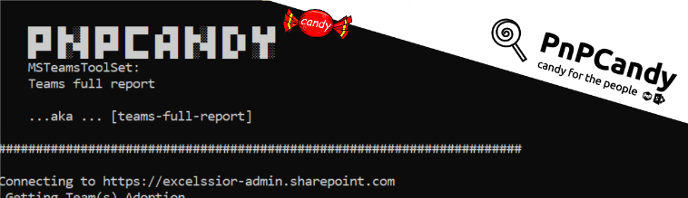

Teams Full Report

Summary
Script to generate Team's full report, gathering all Teams,Channels,Tabs available info.
It includes :
Teams :
Visibility, Url, Classification, CreatedDate, DeletedDate,
Mail, MailEnabled, MailNickname, RenewedDate, SecurityEnabled,
SecurityIdentified, Theme , Owners, Members, GuestsChannels :
PrimaryChannel, Created Date, Email, IdIsFavoriteByDefault,
MembershipType, ModerationSettings, UrlTabs:
PrimaryChannel, Created Date, Email, IdIsFavoriteByDefault,
MembershipType, ModerationSettings, Url,
TabDisplayName,TabWebUrl, TeamsAppId
This script is a subset of the SPO powershell packages with content (PnPCandy) concept already been used across many projects.
Excelsior, hum? :P
[CmdletBinding()]
param (
[Parameter(Mandatory = $True)]
[string]$Tenant ,
[Parameter(Mandatory = $False)]
[string]$Team,
[Parameter(Mandatory = $False)]
[string]$ExportPath= ".\"
)
begin {
$ErrorActionPreference = "Stop"
Import-Module PnP.PowerShell
function Capitalize($objMain) {
if ($null -ne $objMain) {
#test if its an array of objects
$objMain.foreach({
$obj = $_
$members = $obj | Get-Member -MemberType NoteProperty
$members | ForEach-Object {
$name = [regex]::replace($_.Name, '(^|_)(.)', { $args[0].Groups[2].Value.ToUpper() })
$value = $obj.PSObject.Properties[$_.Name].value
$obj.PSObject.Properties.Remove($_.Name)
# add a new NoteProperty 'fqdn'
$obj | Add-Member -Name $name -Value $value -MemberType NoteProperty -Force
$added = $obj.PSObject.Properties[$name]
if ($added.TypeNameOfValue.ToLower() -like "*pscustom*") {
$obj."$($_.Name)" = Capitalize -obj $obj."$($_.Name)"
}
}
})
}
$objMain
}
function Get-UserInfo($obj)
{
$Info=" "
$obj |Select-Object @{n = 'Users'; e = {'[' + $_.DisplayName + ':' + $_.UserPrincipalName +']' } } | ForEach-Object { $Info += $_.Users +";" }
$Info= $Info.Substring(0,$Info.Length-1).Trim()
$Info
}
$msg = "`n`r
█▀█ █▄░█ █▀█ █▀▀ ▄▀█ █▄░█ █▀▄ █▄█
█▀▀ █░▀█ █▀▀ █▄▄ █▀█ █░▀█ █▄▀ ░█░ `n MSTeamsToolSet: `n`r Teams full report `n`n ...aka ... [teams-full-report]
`n"
$msg += ('#' * 70) + "`n"
Write-Output $msg
## Validate if Tenant value is ok
if ($Tenant -notmatch '.onmicrosoft.com') {
$msg = "Provided Tenant is not valid. Please use the following format [Tenant].onmicrosoft.com. Example:pnpcady.onmicrosoft.com"
throw $msg
}
$tenantPrefix = $Tenant.ToLower().Replace(".onmicrosoft.com", "")
$url = "https://$tenantPrefix-admin.sharepoint.com"
Write-Output "Connecting to $Url"
Connect-PnPOnline -Url $url -Interactive -Tenant $Tenant
$accesstoken = Get-PnPAccessToken
}
process {
Write-Output " Getting Team(s) $Team"
$listOfTeams = Get-PnPMicrosoft365Group -IncludeSiteUrl | Where-object { $_.HasTeam }
if (($null -ne $Team) -and ($Team -ne ""))
{
$listOfTeams = $listOfTeams | Where-object {($_.id -eq $Team) -or ($_.Displayname -eq $Team)}
}
if($null -ne $listOfTeams)
{
Write-Output " [$($listOfTeams.Length)] Team(s)"
}
else {
Write-Output " No Team(s) found"
}
$list = @()
$listOfTeams | ForEach-Object {
$tm = $_
Write-Output " Team:$($tm.DisplayName)"
Write-Output " Get membership (Onwers,Members,Guests)"
$Owners = Get-PnPMicrosoft365GroupOwners -Identity $tm.GroupId
$OwnersInfo= Get-UserInfo -obj $Owners
$Members = Get-PnPMicrosoft365GroupMembers -Identity $tm.GroupId
$MembersInfo= Get-UserInfo -obj $Members
$Guests = Get-PnPTeamsUser -Team $tm.DisplayName -Role Guest
$GuestsInfo= Get-UserInfo -obj $Guests
$tm | Add-Member -Name "Owners" -MemberType NoteProperty -Value $Owners -Force
$tm | Add-Member -Name "OwnersInfo" -MemberType NoteProperty -Value $OwnersInfo -Force
$tm | Add-Member -Name "Members" -MemberType NoteProperty -Value $Members -Force
$tm | Add-Member -Name "MembersInfo" -MemberType NoteProperty -Value $MembersInfo -Force
$tm | Add-Member -Name "Guest" -MemberType NoteProperty -Value $Guests -Force
$tm | Add-Member -Name "GuestInfo" -MemberType NoteProperty -Value $GuestsInfo -Force
Write-Output " Membership (Onwers,Members,Guests) collected ! "
$Body = @{
"Resource" = "https://graph.microsoft.com"
}
#get all channels
Write-Output " Getting Channels"
$url = "https://graph.microsoft.com/beta/teams/$($tm.Id)/channels"
$allChannels = @((Invoke-RestMethod -Uri $url -Headers @{Authorization = "Bearer $accesstoken"; "Content-Type" = "application/json" ; "Resource" = "https://graph.microsoft.com"} -Method Get).value)
$allChannels = Capitalize -obj $allChannels
Write-Output " Get Primary Channel"
$url = "https://graph.microsoft.com/v1.0/teams/$($tm.Id)/primaryChannel"
$primaryChannel = Invoke-RestMethod -Uri $url -Headers @{Authorization = "Bearer $accesstoken"; "Content-Type" = "application/json" } -Body $Body -Method Get
$allChannels | ForEach-object {
[PsObject] $chn = [PsObject] $_
# $channel
Write-Output (" [" + $chn.DisplayName + "] Getting Tabs")
$isPrimaryChannel = ($primaryChannel.id -eq $chn.Id)
#Add PrimaryChanell boolean field to each channel
$chn | Add-Member -Name "PrimaryChannel" -MemberType NoteProperty -Value $isPrimaryChannel
$url = "https://graph.microsoft.com/v1.0/teams/$($tm.Id)/channels/" + $chn.Id + "/tabs?`$expand=teamsApp"
$tabs = Invoke-RestMethod -Uri $url -Headers @{Authorization = "Bearer $accesstoken"; "Content-Type" = "application/json" } -Method Get
$tabs = Capitalize -obj $tabs.Value
$chn | Add-Member -Name "Tabs" -MemberType NoteProperty -Value $tabs -Force
Write-Output (" [" + $chn.DisplayName + "] Tabs collected !")
}
Write-Output " All Channels collected!"
Write-Output (" Getting Team ownership")
$teamOwners = Get-PnPTeamsUser -Team $tm.DisplayName -Role Owner
$teamMembers = Get-PnPTeamsUser -Team $tm.DisplayName -Role Member
$teamGuest = Get-PnPTeamsUser -Team $tm.DisplayName -Role Guest
$tm | Add-Member -Name "Channels" -MemberType NoteProperty -Value $allChannels -Force
$tm | Add-Member -Name "Owners" -MemberType NoteProperty -Value $teamOwners -Force
$tm | Add-Member -Name "Members" -MemberType NoteProperty -Value $teamMembers -Force
$tm | Add-Member -Name "Guest" -MemberType NoteProperty -Value $teamGuest -Force
}
Disconnect-PnPOnline
Write-Output "Disconnected"
$exportTeams = $listOfTeams | Sort-Object Id
$teams = $exportTeams |Select-Object @{n = 'TeamId'; e = { $_.Id } } , @{n = 'TeamDisplayName'; e = { $_.DisplayName } } , @{n = 'TeamDescription'; e = { $_.Description } }, `
Visibility, SiteUrl, Classification, CreatedDateTime, DeletedDateTime, `
Mail, MailEnabled, MailNickname, RenewedDateTime, SecurityEnabled, SecurityIdentified, Theme , OwnersInfo, MembersInfo, GuestsInfo
$teamsChannels = $exportTeams | Select-Object @{n = 'TeamId'; e = { $_.Id } }, @{n = 'TeamDisplayName'; e = { $_.DisplayName } } , @{n = 'TeamDescription'; e = { $_.Description } } -ExpandProperty Channels| Select-Object $_.Channels
$teamsChannels = $teamsChannels| Select-Object TeamDisplayName, @{n = 'ChannelId'; e = { $_.Id } } , @{n = 'ChannelDisplayName'; e = { $_.DisplayName } } , @{n = 'ChannelDescription'; e = { $_.Description } } , `
PrimaryChannel, CreatedDateTime, Email, IdIsFavoriteByDefault, MembershipType, ModerationSettings, WebUrl, Tabs
$teamsChannelsTabs =$teamsChannels | Select-Object TeamDisplayName, ChannelDisplayName -ExpandProperty Tabs
$teamsChannelsTabs =$teamsChannelsTabs | Select-Object TeamDisplayName,ChannelDisplayName,@{n = 'TabId'; e = { $_.Id } },@{n = 'TabDisplayName'; e = { $_.DisplayName } } , @{n = 'TabWebUrl'; e = { $_.WebUrl } } -ExpandProperty TeamsApp
$teamsChannelsTabs =$teamsChannelsTabs | Select-Object TeamDisplayName,ChannelDisplayName,TabId, TabDisplayName,TabWebUrl, @{n = 'TeamsAppId'; e = { $_.Id } }
$teamsChannels = $teamsChannels | Select-Object TeamDisplayName,ChannelId, ChannelDisplayName, ChannelDescription, PrimaryChannel, CreatedDateTime, Email, IdIsFavoriteByDefault, MembershipType, ModerationSettings,WebUrl
Write-Output "Export all Teams info"
$path= (Resolve-path -Path $ExportPath).Path
$teams | Export-Csv -Path "$path\Teams.csv" -Force
$teamsChannels |Export-Csv -Path "$path\TeamsChannels.csv" -Force
$teamsChannelsTabs | Export-Csv -Path "$path\TeamsChannelsTabs.csv" -Force
Write-Output "All Teams info exported at [$path] "
}
Check out the PnP PowerShell to learn more at: https://aka.ms/pnp/powershell
Important changes coming to the way you login into PnP PowerShell (effective 9th September 2024) see Changes in PnP Management Shell registration in Microsoft 365
Contributors
| Author(s) |
|---|
| Reshmee Auckloo |
| Rodrigo Pinto |
Disclaimer
THESE SAMPLES ARE PROVIDED AS IS WITHOUT WARRANTY OF ANY KIND, EITHER EXPRESS OR IMPLIED, INCLUDING ANY IMPLIED WARRANTIES OF FITNESS FOR A PARTICULAR PURPOSE, MERCHANTABILITY, OR NON-INFRINGEMENT.